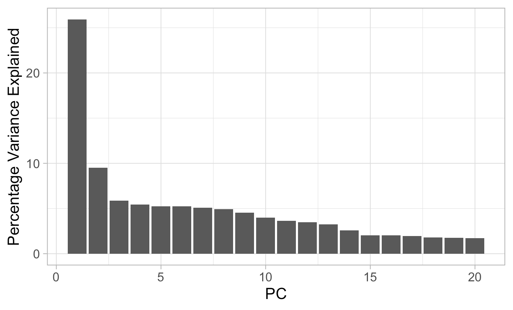
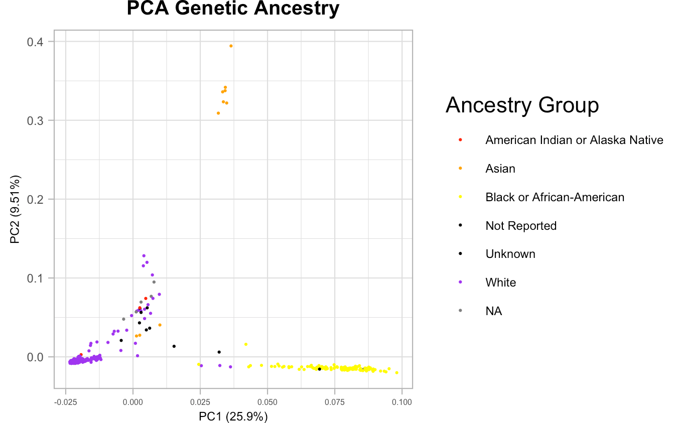
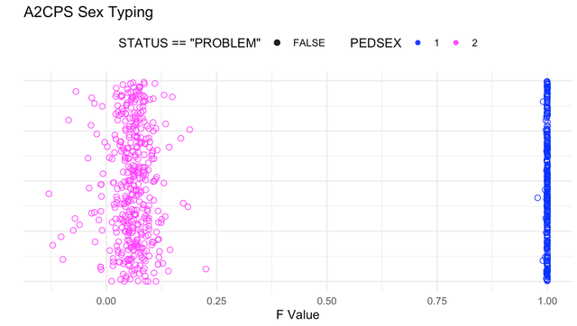

| FID | IID | PAT | MAT | SEX | PHENOTYPE | rs1285057_G | rs543650_C | rs488133_G |
|---|---|---|---|---|---|---|---|---|
| 3 | 12Y7jxjbej5qm_L27BDmybNy8zN | 0 | 0 | 1 | -9 | 0 | 2 | 2 |
| 4 | 1AL7Oyj1m1Yep_L27BDmybNy8zN | 0 | 0 | 2 | -9 | 2 | 1 | 1 |
1 Single-Nucleotide Polymorphisms
This page provides considerations for A2CPS projects that involve the Genetic Variant data.
1.1 Starting Project
1.1.1 Locate Data
On TACC, the data are stored underneath the releases. For example, data release v1.#.# is underneath
/corral-secure/projects/A2CPS/products/consortium-data/pre-surgeryThe single-nucleotide polymorphisms are underneath the omics/gene_variants folder
$ ls -w 120 /corral-secure/projects/A2CPS/products/consortium-data/pre-surgery/omics/gene_variants/
20231012_GV_genotypes_RunList_1_2_3_plink_biospecimen_mapping.csv
20231012_GV_genotypes_RunList_1_2_3_subj_filtered.bed
20231012_GV_genotypes_RunList_1_2_3_subj_filtered.bim
20231012_GV_genotypes_RunList_1_2_3_subj_filtered.fam
20231012_GV_genotypes_RunList_1_2_3_subj_filtered.hh
20231012_GV_genotypes_RunList_1_2_3_subj_filtered.logThese files are in the PLINK format.
1.1.2 Extract Data
To access the variant data, plink2 (or the older plink) must be installed. Please see: PLINK 2.0.
Store the rsIDs in a newline-delimited file. For example, the file below, snps.txt, has 11 rsIDs (of which only 3 are available in A2CPS).
$ cat snps.txt
rs851984
rs543650
rs1285057
rs488133
rs2071454
rs71685044
rs988328
rs3020327
rs3020329
rs2144025
rs7570903The plink2 command can then use that file to create a table of how many of the non-dominant alleles are present for each individual.
$ plink2 \
--bfile gene_variants/20231012_GV_genotypes_RunList_1_2_3_subj_filtered \
--recode A \
--out snps \
--extract snps.txt A subset of the resulting table is below (the full table has 677 rows, including the header).
- FID
- Family ID (expected to be more-or-less unique within A2CPS)
- IID
- Individual ID (format: biospecimenID_runlistID)
- PAT
- ID for Father (IID)
- Not expected to be in A2CPS
- MAT
- ID for Mother (IID)
- Not expected to be in A2CPS
- SEX
- 1: Male
- 2: Female
- PHENOTYPE
- Always “not available“ value: -9
- rs[0-9]*_[ATGC]
- A count of the number of minor (alternate) alleles for that individual: 0, 1, or 2
See also the R package snpStats and the python package bed-reader.
1.1.3 PLINK 1.9
See all files types here: File format reference - PLINK 1.9.
Those critical to the analyses below are expanded.
1.1.3.1 .bim
Each row in this file specifics a genetic variant and provides extended information on its location and alleles.
| CHR | VAR ID | POS (cM) | POS (bp) | ALLELE 1 (ALT) | ALLELE 2 (REF) |
|---|---|---|---|---|---|
| 1 | GSA-rs2055204 | 0.5627189 | 2349222 | A | G |
| 1 | rs7527871 | 0.5656815 | 2350287 | C | A |
- Var ID
- rsID = Reference SNP (single nucleotide polymorphism) Cluster ID
- GSA = (likely) Global Screening Array
- 22:24377823_CNV_GSTT1
- For Variants labeled as such, this ID means CHR:POS:CopyNumberVariant:Gene
- cM (centimorgan) = measure of the frequency genetic recombination. 1 cM is a 1% chance that two markers on a chr will separate due to recombination during meiosis.
- bp (base-pair) = each chr starts at 1, this value shows the position of the base-pair on the chr
- Allele 1 and 2 are typically - but not always - alt (minor) first and ref (major) second.
1.1.3.2 .fam
| Family ID | Individual ID | Father ID | Mother ID | Sex | Phenotype |
|---|---|---|---|---|---|
| 3 | 12Y7jxjbej5qm_L27BDmybNy8zN | 0 | 0 | 1 | -9 |
| 4 | 1AL7Oyj1m1Yep_L27BDmybNy8zN | 0 | 0 | 2 | -9 |
- FaID and MoID expected as ‘0’ (patients not recruited for a family based study)
- Sex:
- 1 = M, 2 = F
- Phenotype
- 1 = Control, 2 = Case, 0/-9 if not present
1.1.3.3 .hh
A file is generated whenever a variant information contains a heterozygous call when it should not be possible, such as the examples highlighted below:
| FID | IID | VarID |
|---|---|---|
| 335 | ywZzw1kLEED9V_MvY69AXPg00MP | rs1419931 |
| 43 | P5PydYRLo8Ev4_L27BDmybNy8zN | rs145903180 |
- Male X/Y (haploid) chr that appear as heterozygous for a loci - when they should always be hemizygous (a genetic locus’ zygosity when only one member of a chr pair exists)
- Nonmale nonmissing calls for Y chr
- Run list 1-3 has 270 unique individuals and 606 unique SNPs included in its .hh file (and 1637 total combinations of participant / SNP)
1.2 Considerations While Working on the Project
The below procedures were performed with these data:
20231012_GV_genotypes_RunList_1_2_3_subj_filtered.bed
20231012_GV_genotypes_RunList_1_2_3_subj_filtered.bim
20231012_GV_genotypes_RunList_1_2_3_subj_filtered.fam
1.2.1 Principal Components
Systematic differences in ancestry between groups – population stratification – can lead to spurious associations with allele frequencies, and so multiethnic analyses often include genetic principal components to account for the variation imposed by population structure.
1.2.1.1 Steps
- LD Pruning (as PCA relies on independent observations)
$ ./plink \
--bfile /Users/sethberke/a2cps_pca/genotypes_RunList_1_2_3_subj_filtered \
--double-id \
--allow-extra-chr \
--indep-pairwise 50 10 0.1 \
--out /Users/sethberke/a2cps_pca/LD_Pruned/a2cps_rl123_LDPruned- Run Principal Components
$ ./plink \
--bfile /Users/sethberke/a2cps_pca/genotypes_RunList_1_2_3_subj_filtered \
--double-id \
--allow-extra-chr \
--extract /Users/sethberke/a2cps_pca/LD_Pruned_genetics/a2cps_rl123_LDPruned.prune.in \
--make-bed \
--pca \
--out /Users/sethberke/a2cps_pca/PCA_genetics_LD/pca_infoThe below values were derived from the Principal Components, and are used for the plots below
Eigenvalues:
[1] 18.52620 6.79662 4.20243 3.88020 3.75206
[6] 3.73819 3.62751 3.51185 3.25737 2.84735
[11] 2.59636 2.50097 2.32851 1.83828 1.46430
[16] 1.44651 1.40563 1.28245 1.25099 1.23163
Percent Variance Explained
[1] 25.916058 9.507702 5.878724 5.427961 5.248707
[6] 5.229305 5.074476 4.912681 4.556692 3.983120
[11] 3.632014 3.498574 3.257322 2.571546 2.048390
[16] 2.023504 1.966317 1.794002 1.749993 1.7229111.2.1.2 Plotting


1.2.2 Sex Typing
This procedure confirms the gender of each participant as documented in the study by testing the X Chromosome homozygosity levels. Male participants are haploid for the X chromosome whereas females are diploid, thus we expect a high deviation from the genotypes predicted by Hardy-Weinberg equilibrium (0/0, 0/1, 1/1) with male participants, as their genes should exclusively be either A or a (hemizygous). This deviation is captured by the F Statistic (F stat) in PLINK Below are the steps used on A2CPS genotype data to confirm the gender of each participant.
1.2.2.1 Steps
- Subset ChrX (23)
$ ./plink \
--bfile /Users/sethberke/a2cps_imputation/sextyping/20231012_GV_genotypes_RunList_1_2_3_subj_filtered \
--chr 23 \
--make-bed \
--out /Users/sethberke/a2cps_imputation/sextyping/ChrX_BF/chrX_subset- Variant Level QC (no Hardy-Weinberg testing)
$ ./plink \
--bfile /Users/sethberke/a2cps_imputation/sextyping/ChrX_BF/chrX_subset \
--keep-allele-order \
--geno 0.2 \
--maf 0.01 \
--make-bed \
--out /Users/sethberke/a2cps_imputation/sextyping/Variant_Filtered_BF/CLSeq-CHR-X.Variant_Filtered- Split off pseudoautosomal region (PAR)
- PAR are areas of the X (and Y) chromosome that mirror the inheritance patterns of autosomes, and thus could confound
$ ./plink \
--bfile /Users/sethberke/a2cps_imputation/sextyping/Variant_Filtered_BF/CLSeq-CHR-X.Variant_Filtered \
--split-x hg38 \
--make-bed \
--out /Users/sethberke/a2cps_imputation/sextyping/PA_Removed_BF/CLSeq-CHR-X_PA_Removed- LD Pruning Identification (of sites highly linked) and Extraction (keeping sites in low linkage)
$ ./plink \
--bfile /Users/sethberke/a2cps_imputation/sextyping/Variant_Filtered_BF/CLSeq-CHR-X.Variant_Filtered \
--indep-pairphase 100 5 0.2 \
--out /Users/sethberke/a2cps_imputation/sextyping/LD_Pruning_Info/pruned
$ ./plink \
--bfile /Users/sethberke/a2cps_imputation/sextyping/Variant_Filtered_BF/CLSeq-CHR-X.Variant_Filtered \
--extract /Users/sethberke/a2cps_imputation/sextyping/LD_Pruning_Info/pruned.prune.in \
--make-bed \
--out /Users/sethberke/a2cps_imputation/sextyping/LD_Pruned_BF/CLSeq-CHR-X.LD_Pruned_BF- Estimating Minor Allele Frequencies (MAF)
- This will allow us to properly observe deviations of observed genotypes from those predicted genotypes from Hardy-Weinberg (which uses MAF data for predictions).
$ ./plink \
--bfile /Users/sethberke/a2cps_imputation/sextyping/LD_Pruned_BF/CLSeq-CHR-X.LD_Pruned_BF \
--freq \
--out /Users/sethberke/a2cps_imputation/sextyping/CLSeq-X-MAF- Sex Typing
- As a general rule an F Stat of 0.3 is the maximum seen for females and 0.75 is the minimum for males (see as reflected by the chart below). This is because we expect ≈ 1 almost always for males, who will consistently deviate from HWE due to X chromosome hemizygosity, and we expect females to have a normal distribution around 0 (as they are heterozygous for the x chromosome). Here, the female participants hover around 0.05, likely a shift that is due to population structure.
$ ./plink \
--bfile /Users/sethberke/a2cps_imputation/sextyping/LD_Pruned_BF/CLSeq-CHR-X.LD_Pruned_BF \
--read-freq /Users/sethberke/a2cps_imputation/sextyping/CLSeq-X-MAF.frq \
--check-sex 0.3 0.75 \
--out /Users/sethberke/a2cps_imputation/sextyping/sex_check1.2.2.2 Output
| FID | IID | PEDSEX | SNPSEX | STATUS | F |
|---|---|---|---|---|---|
| 3 | 12Y7jxjbej5qm | 1 | 1 | OK | 0.99930 |
| 4 | 1AL7Oyj1m1Yep | 2 | 2 | OK | 0.06212 |
| 5 | 1bXk02M1ErKKY | 2 | 2 | OK | 0.08526 |
1.2.2.3 Plotting

1.2.4 Imputation
Statistically inferring whole genome sequences from SNP Array data using haplotype reference panels.
Segments of the genome that the main array did not sample may still be immutable. Work on this is ongoing (as of September 11, 2024).
- Investigate the Michigan Imputation Server: Getting Started - Michigan Imputation Server 2.
1.2.5 Currently
Working slide deck explaining pre-imputation data preparation: ADD PPTX HERE.
Will test imputation on TOPMed Imputation Server and report back on imputation quality.